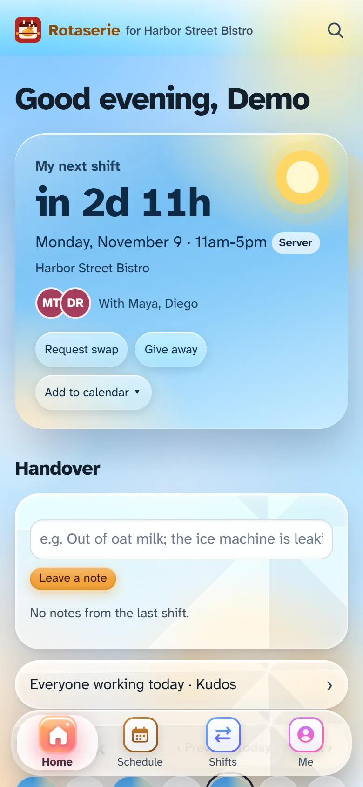
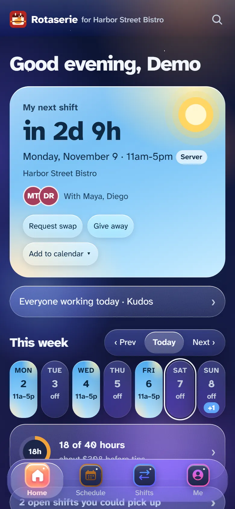
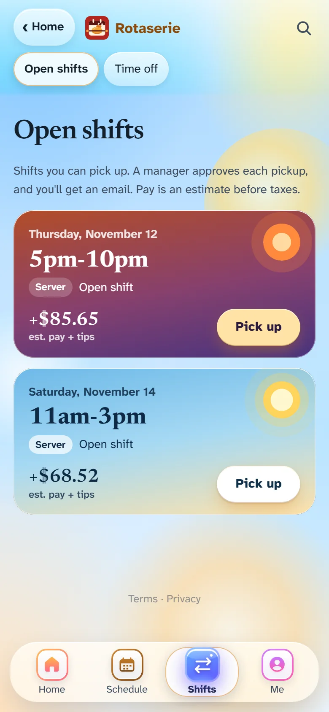
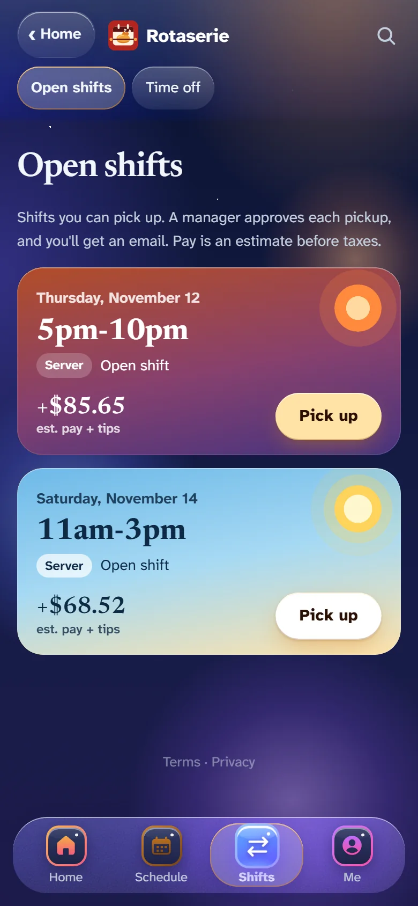
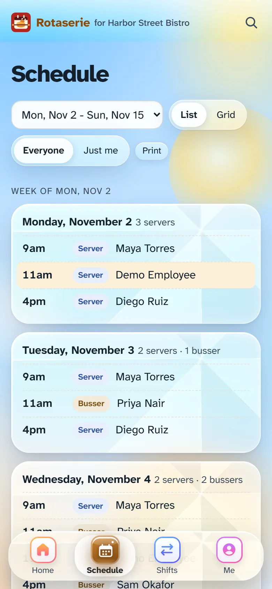
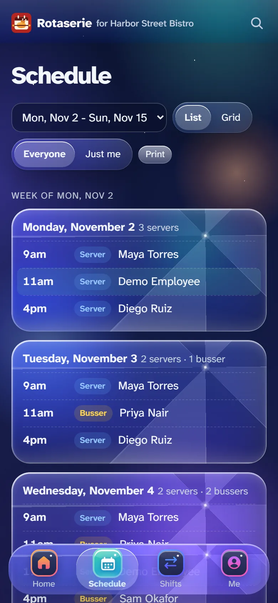
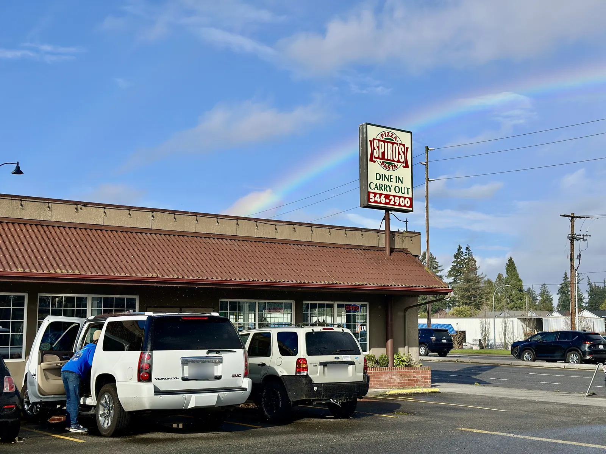

Built and used every week at Spiros
Type the week. Get the schedule.
Write “maria tue-fri 9-5” the way you'd text it. Rotaserie catches time off, overtime and short days as you go, then sends the week to everyone's phone.
See it work
From typed lines to a published week.
The real app, recorded in real time with sample data.
For your staff
Their schedule, on their phone.
Staff don't download anything. You add them, and they scan your QR code to put Rotaserie on their phone and sign in once. From then on they see their next shift, pick up open shifts, swap with a coworker and ask for time off, in English or Spanish.






The 6 AM call-out
Call-outs reach you right away.
Your cook taps I can't make it on today's shift and picks a reason. You're told at once, even in quiet hours, with a link to everyone who could cover it.
English y español
Each person reads it in their language.
Each person picks English or Spanish for their own screens, emails and phone alerts. You schedule in yours; your kitchen reads theirs.
Where it started
Spiros runs on Rotaserie.
Rotaserie was built at Spiros, a restaurant in Shoreline, Washington, to give a busy manager her time back. It runs Spiros's schedule every week: building the week, swaps, time off and publishing to the whole team.

Questions
What owners ask first.
Do I have to type the schedule?
No. Typing is the fastest way, but you can also drag shifts on the week, tap your usual shift times, copy last week, or keep a regular schedule that fills itself in.
Do my staff need to download an app?
No. Rotaserie runs in any phone's browser. Staff add it to their home screen and get phone alerts like any app.
Is it only for restaurants?
No. It was built at a restaurant, and it's ready for cafés, shops, salons, fitness studios and field crews, each with its own starting roles and shift times.
Does it replace my point of sale or time clock?
No. Keep clocking in where you do now. Rotaserie handles the schedule, swaps, time off and messages around it, and has its own time clock if you want one.
Is it in Spanish?
Yes. Everyone chooses English or Spanish for their own screens, emails and phone alerts.
How much does it cost?
One price per location, with every feature included. Ask for early access and we'll walk you through it.
Take more off your plate with Rotaserie.
Rotaserie is in early access. Tell us about your business and we'll set it up with you; your team can be on it the same day.
This opens an email to Robert, the founder. Or write to robert@rotaserie.com.